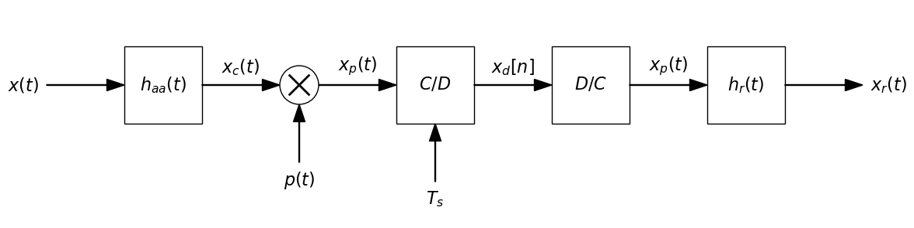
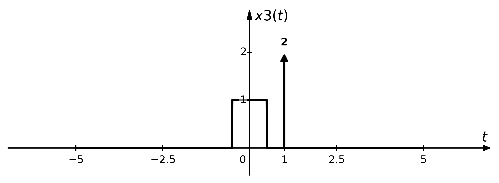
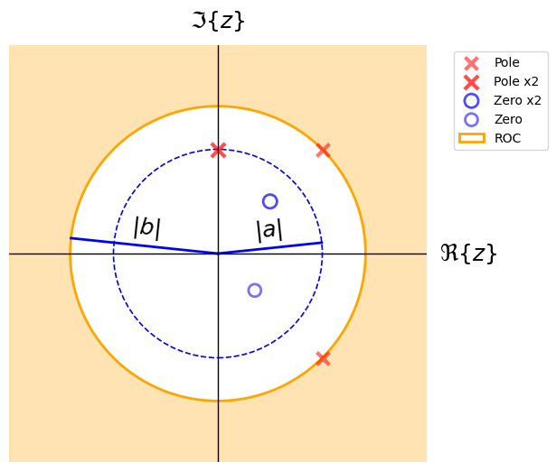

SignalBlocks
SignalBlocks is a Python library for visualizing and manipulating signals & systems.
Developed by Miguel Á. Martín-Fernández, the goal of this package is to make it easy to create publication-ready block diagrams and plot symbolic signal definitions and combinations, including time-domain operations (shifting, scaling, convolution) and complex plane Z-Transform ROC representations with a minimal and intuitive API.
🚀 Installation
You can install the library using pip (once published):
pip install signalblocks
If you're working locally with the repository:
pip install -e .
📦 Features
- Create and draw block diagrams:
- Draw basic blocks, summing junctions, arrows, and multipliers
- Horizontal/vertical or any angle layout support
- Customizable labels and positions
- Easy integration with Jupyter notebooks
- Thread for several lines in diagrams
- Feedback branches
- Define and plot signals:
- Typical signals: steps, deltas, rect, tri, sinc, ramp, ...
- Piecewise signals.
- Periodic signals support.
- Time shift operations.
- Signal combinations.
- Time sampling support.
- Convolutions with intermediate signals plot.
- Z-Transform Complex Plane Visualization (ComplexPlane)
- Display Z-transform Region of convergence (ROC):
- Inner disk (|z| < a)
- Outer disk (|z| > a)
- Annular regions (a < |z| < b)
- Plot poles and zeros directly in the complex plane.
- Accept both Cartesian (complex numbers) and polar (modulus/angle) coordinates.
- Support for multiplicities: automatically groups multiple poles/zeros at same location.
- Draw unit circle, radial guides, and custom annotations. Automatic label placement with overlap avoidance.
- Display Z-transform Region of convergence (ROC):
🧰 Block Diagram Basic Example
from signalblocks import DiagramBuilder
db = DiagramBuilder(block_length=1, fontsize=16)
# Diagram drawing
db.add("x(t)", kind="input")
db.add("h_{aa}(t)", kind="block")
db.add("x_c(t)", kind="arrow")
db.add("mult", kind="combiner", input_text="p(t)", operation='mult', input_side='bottom')
db.add("x_p(t)", kind="arrow")
db.add("C/D", kind="block", input_text="T_s", input_side='bottom')
db.add("x_d[n]", kind="arrow")
db.add("D/C", kind="block")
db.add("x_p(t)", kind="arrow")
db.add("h_r(t)", kind="block")
db.add("x_r(t)", kind="output")
#db.show()
db.show(savepath = "diag1.png")
This will generate a basic sample and interpolation diagram.

🧰 Additional examples
Additional examples notebook 1 Additional examples notebook 2
📊 Signal Basic Example
from signalblocks import SignalPlotter
sp = SignalPlotter()
sp.add_signal("x1(t)=2*delta(t-1)")
sp.add_signal("x2(t)=rect(t)")
sp.add_signal("x3(t)=x1(t) + x2(t)")
sp.plot("x3")
This will generate a basic signal with a shifted Dirac Delta and a rect.

📊 Additional examples
Additional examples notebook 1
🔵 Z-Transform Complex Plane Visualization Examples
import numpy as np
from signalblocks import ComplexPlane
cp = ComplexPlane(xlim=(-2, 2), ylim=(-2, 2))
poles = [1 + 1j, (1, np.pi/2), 1j, 1 - 1j]
zeros = [0.5 + 0.5j, (0.5, -np.pi/4), 0.5 + 0.5j]
cp.draw_poles_and_zeros(poles=poles, zeros=zeros)
r1 = cp.min_pole_modulus()
r2 = cp.max_pole_modulus()
cp.draw_ROC(f"|z|>{r2}")
cp.draw_radial_guides(labels=["|a|", "|b|"],
radii=[r1, r2],
angles=None, # auto-ajuste
circles=[True, False])
cp.show(savepath="complex_plane1.png")

📚 Documentation
See the API Documentation for full reference of all available drawing functions and parameters.
🛠️ Contributing
Feel free to open issues or pull requests on GitHub if you'd like to contribute or report bugs.
📄 License
This project is licensed under the GNU GPL v3.0 or later.